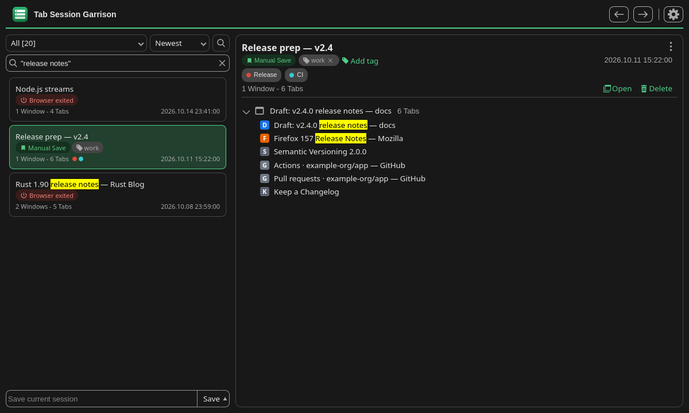
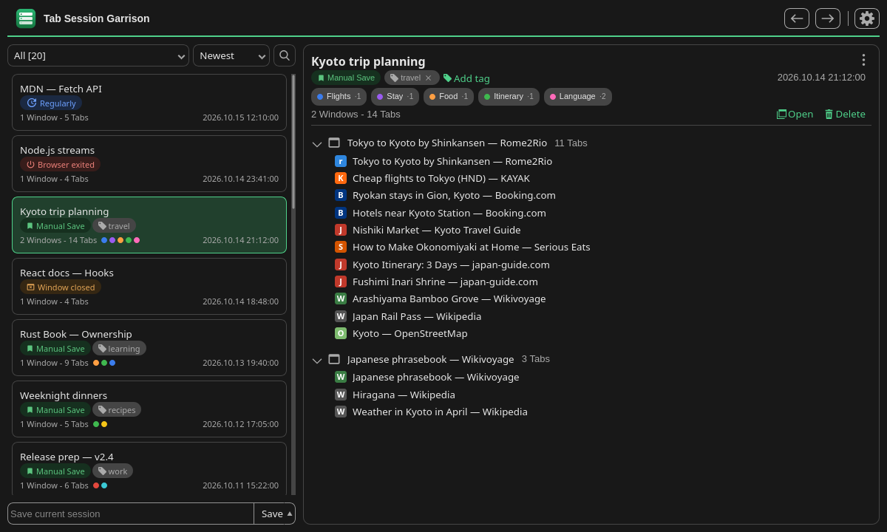

A Firefox session manager built around search. Thousands of saved sessions are only useful if you can find the one tab you need, so search is where this project is heading.
Free · Firefox only · everything stays on your computer
Plain words can match anywhere in a session. Put them in quotes and they have to appear together, inside one tab title, session name or tab-group name.
stop lightFinds sessions where “stop” and “light” both appear, even in different tabs. Good for casting a wide net.
"stop light"Finds only the tab that actually says “stop light”. A phrase never spans two tabs. Results update while you type, even before the closing quote.
itineraryGroup names are searchable too, so typing a group's name surfaces every session that contains it. Matches are highlighted in the list and the tab list.

Each step ships on its own. The order follows how people actually look for things: by a site they half remember, or a few words from a page title.
Exact "quoted phrases" that stay inside one tab, searchable tab-group
names, and highlighted matches.
Many sites give every tab the same title. Five tabs all called “Instagram” only differ
by their address, so reels or a profile name should find
instagram.com/some_profile/reels/. Full links will be searched, without the
https:// and www. noise, with title matches ranked first.
Narrow a search down instead of scrolling:
-word leaves out sessions that match it.site: url: tag: group:
title: name: search one place only.In the spirit of fzf: ghb
finds GitHub, exact hits rank above fuzzy ones, the best session floats to the top and is
pre-selected, and Enter opens it. Clear the box and your own sort order comes
back.
Each result says what matched (“tab: Stop light timing…”, “link: github.com/…”, “group: Projects”), the detail pane jumps to the matching tabs, and a count shows how many tabs matched.
| Type | Finds | Status |
|---|---|---|
stop light | Both words, anywhere in the session | Live |
"stop light" | The exact phrase, inside one title or name | Live |
reels | …also inside tab links (today: titles, names and groups) | Next |
github -issues | Sessions with “github” but without “issues” | Next |
site:github.com | Tabs on that site only | Next |
tag:work | Sessions with that tag | Next |
group:Projects | Tab-group names only | Next |
ghb | Fuzzy: GitHub, ranked by match quality | Planned |
Every part of the popup works from the keyboard. Press ? in the popup to see the keys; they're also listed in Settings → Shortcuts. An automated test presses every key before each release, so they keep working.
Search (" starts a phrase)
Move through sessions
Select a range
Open
Replace or add to this window
Into the tab list and back
Rename · add tags
Delete · undo
Once you've found it, everything else stays fast.
If saving ever fails, a red ! on the toolbar icon tells you, instead of auto-save quietly stopping.
Open or delete dozens of sessions at once, and get them all back with a single undo.
Named, coloured groups are saved and restored, and shown on every session.
The list appears in about a quarter of a second, even with 3,500 saved sessions.

Also on the list: a backup overhaul, renaming saved windows, a trash can for deleted sessions, and restoring Firefox split views once Firefox allows it. Full roadmap →